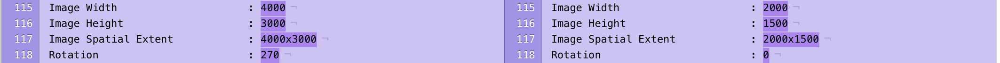

我们的项目中支持了heic的上传和展示。在iOS 14之前，一切都很美好，我们享受着heic带来的图片体积的减小。但是在iOS 14以及新的macOS中，事情发生了变化，非常多的heic图片的展示方向都和预想的不一样。这是怎么回事呢？
背景
我们的项目中在图片上传之前会对图片本身进行一些ImageI/O相关的处理。
首先，我们会将图片downsampling，对于图片的像素数量我们有一个最大的限制是15000000个像素。对于图片最短边的尺寸我们限制为1500个像素。也就是说，假设原图大小是30004000，我们会把图片缩放到15002000。实现原理是通过WWDC18 session 219介绍的方式，通过ImageI/O进行处理（详情见图片渲染优化）。
downsampling完成之后，我们会根据图片的类型进行compress。比如对于jpeg以及heic，我们会进行一个0.75 compress quality的压缩（经验值）。
问题出在哪？
首先拿到heic原图和经过我们处理后的图片，通过exiftool打印图片的元信息，这里仅对相关的属性进行一个diff（左边是原图，右边是处理过的图片）：

我们发现这个Rotation信息和之前的不一样了，于是我们合理怀疑一下是不是这个Rotation导致图片展示方向出了问题？
然而根据我们之前的经验和相关的苹果的文档，图片的方向是根据Orientation来进行计算的，而两边图片元信息中的Orientation的值都是一样的：Rotate 90 CW即顺时针旋转90度。这又是为什么呢？
后来我们得知，这个Rotation是heic独有的属性，因此我们推测，在新的系统上，苹果使用了这个Rotation来进行图片方向的判断。
诊断
Fine，那为什么经过我们处理后的图片会丢失Rotation相关的信息呢？经过了几天各种各样乱七八糟的尝试以及各地各式的资料搜集，我们依旧没能找到答案，这个Rotation信息就这么没了。。。
于是我们作出了一个假设就是ImageI/O的处理就是会导致失去Rotation信息，那么我们解决的思路就分以下两种：
- 不遗余力把这个
Rotation信息找回来 - 在downsampling的时候让ImageI/O把图片先转一下
第二个方案实现起来很简单，只需要在downsampling的时候把kCGImageSourceCreateThumbnailWithTransform设为true就好了，但是我们又会发现，转过来了之后在旧的iOS版本上，图片方向又是错的了，原因可能是在旧版本上系统是根据Orientation来判断图片方向的。。。
所以到目前为止，我们唯一稍微可行的方案是：在downsampling的时候把图片先转一下，在encode的阶段把meta data全丢掉，这样显示的就是对的，可这么做似乎并不优雅。
解决方案
在一筹莫展之际，我随意地翻了翻ImageI/O相关的接口和注释，发现一个有趣的东西：kCGImageDestinationImageMaxPixelSize，这是一个在encode的时候的一个配置项，但是和downsampling的一个配置项非常像：kCGImageSourceThumbnailMaxPixelSize。
于是我有了一个大胆的假设，是不是真正的最佳实践并不是手动downsampling+encode，而是通过encode的配置项实现downsampling，反正图片编码也会进行downsampling。
于是我动手改造原来的代码，将手动downsampling的过程去掉，通过CGImageDestinationAddImageFromSource的方法传入图片的image source进行encode，而不是之前直接传入CGImage。果然，经过处理后的图片没有丢掉Rotation，我们得到了一个可能是完美的解决方案。
总结
ImageI/O相关的文档和注释真的非常之少，而且缺乏系统指导性的最佳实践，甚至连苹果系统内部对于图片方向的判断逻辑都出现严重的前后不一。不过通过这个问题，我们推想出了一个最佳实践，那就是只有在显示渲染的时候，我们才去做手动downsampling，对于encode来说，downsampling的操作是可以传入参数自动完成的。